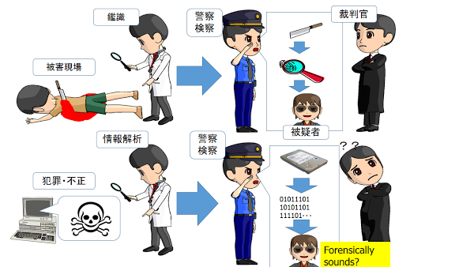

サイバー社会の安全・安心のために当研究室では、サイバー社会における不正や犯罪を抑止し、より安心して使える安全なインターネット環境を提供するために役立つ技術を研究しています。
システムセキュリティ情報システムのセキュリティは、暗号や認証という基礎技術を基として、適切に設計されたシステム構成、その上で構築されたソフトウェア、そして
システムの適切な運用が相互に連携して初めて確保できるものです。これをシステムセキュリティと呼びます。システムセキュリティの確立のためには、各々の
要素技術の理解はもちろん、その相互の関係を理解できる技術者・管理者が必要となります。当研究室では、幅広い研究分野への参画を通じて、近視眼的な技術
に頼らない、バランスの良い技術選択とシステム構築が出来る技術者の養成を目指しています。
デジタル・フォレンジック情報システムが複雑化するほど、セキュリティ上の事故は避けられません。特に、悪
意ある者による不正や犯罪を完全に防ぎきることは困難です。そこで、情報システムの運用においては不正や事故の早期発見と被害拡大の防止、不正や犯罪の証
拠の発見、収集、改ざんや消去の防止、分析、そして適切な報告が重要になってきます。デジタル・フォレンジック(Digital
Forensics)とは、このようなデジタルデータの証拠（電磁的証拠）を扱う一連の技術を扱う新しい研究分野です。当研究室ではこの分野における最先
端の技術開発を行っていきます。

サイバーセキュリティ研究室では、実社会のニーズに敏感な、即戦力となる学生の育成に力を入れています。研究テーマは出来るだけ社会の具体的な問題の解決に繋がるニーズ指向のものを設定しています。興味を持った学生さんはいつでも指導教員（上原）までご連絡下さい（連絡先は下記）。連絡はあらかじめメールを頂くのが確実です。
研究室配属にあたっては、具体的な研究テーマのイメージが固まっている学生さんを優先し
たいと思います。志望調書の志望理由のところに、自分が解決したいと考えているセキュリティ上の課題は何なのか、どのようなアプローチが有効だと考えてい
るのか書いて下さい。定員を超過した場合の選考は（１）志望調書の内容（２）事前に面談等したときの内容（３）研究室公開時の質疑内容、を重視します。特
に（１）は研究テーマの具体性を重視しますが、まだ研究テーマを決めかねている人は、その代わり自分の持っているスキル（サーバ管理、プログラミング能力、情報システムへの深い理解など）や、社会問題に関する知識をアピールしても構いません。また、セキュリティに関する研究には、探究心や知的好奇心が欠かせませんが、これを持っていることをアピールしてもいいでしょう。
| 研究室の予定 uehara@cysec.cs.ritsumei.ac.jp |
{kind=link}
{kind=link}